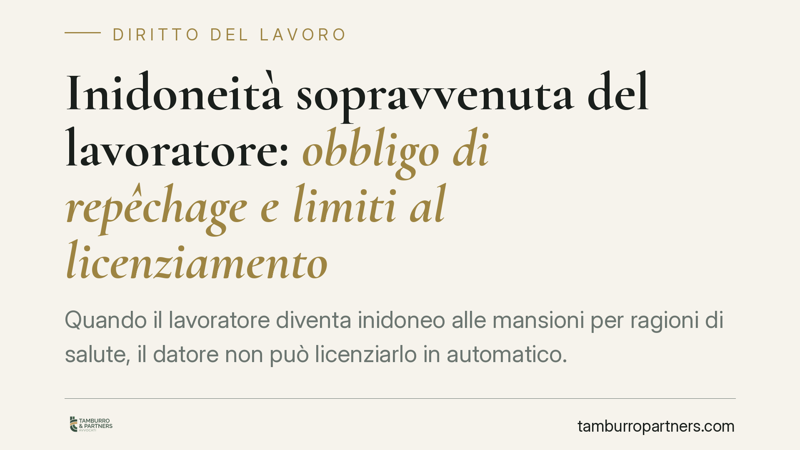

Inidoneità sopravvenuta del lavoratore: obbligo di repêchage e limiti al licenziamento
Quando il lavoratore diventa inidoneo alle mansioni per ragioni di salute, il datore non può licenziarlo in automatico. Deve prima verificare se esistono posizioni alternative compatibili con il nuovo stato fisico. Solo in assenza di soluzioni praticabili il recesso diventa legittimo. La Cassazione è netta: l'onere della prova grava interamente sull'azienda.

Il fatto e perché conta
L'inidoneità sopravvenuta è la perdita, totale o parziale, della capacità di svolgere le mansioni assegnate per ragioni di salute. Non è una colpa del lavoratore né un suo inadempimento: è un fatto oggettivo, spesso accertato dal medico competente aziendale.
Il punto delicato è cosa succede dopo. Il datore può avviare un licenziamento? Sì, ma solo come ultima opzione e a condizioni precise. La giurisprudenza della Sezione Lavoro della Cassazione ha costruito nel tempo una serie di obblighi che l'azienda deve soddisfare prima di recedere.
Inquadramento normativo
Il riferimento principale è l'art. 42 del d.lgs. 81/2008 (Testo unico sulla sicurezza sul lavoro). La norma prevede che, se il medico competente esprime un giudizio di inidoneità alla mansione specifica, il datore deve adibire il lavoratore, ove possibile, a mansioni equivalenti o, in mancanza, a mansioni inferiori, garantendo in quest'ultimo caso il trattamento economico corrispondente alle mansioni di provenienza.
Si collega qui l'art. 2103 del codice civile, che disciplina lo *ius variandi*, cioè il potere del datore di modificare le mansioni. La riforma del 2015 ha reso più flessibile l'assegnazione a mansioni inferiori proprio in casi come questo, in cui il demansionamento serve a conservare il posto di lavoro.
La Cassazione ha chiarito che il licenziamento per inidoneità rientra nel giustificato motivo oggettivo (GMO): un recesso legato a ragioni organizzative o, come qui, all'impossibilità sopravvenuta della prestazione. Il regime sanzionatorio in caso di illegittimità, per gli assunti dal 7 marzo 2015, segue il d.lgs. 23/2015 (cosiddetto "contratto a tutele crescenti").
L'obbligo di repêchage
Il termine "repêchage" (letteralmente "ripescaggio") indica l'obbligo del datore di verificare se, all'interno dell'organizzazione, esistono posizioni compatibili con il nuovo stato di salute del lavoratore prima di procedere al licenziamento.
Non è un obbligo formale. La Cassazione richiede una verifica concreta ed effettiva su tutte le posizioni disponibili al momento del recesso, incluse quelle corrispondenti a mansioni inferiori. Il datore deve dimostrare di avere esaminato le alternative, non limitarsi ad affermare che non ce n'erano.
Resta un limite: il repêchage non impone di creare una posizione *ad hoc*, né di modificare l'assetto organizzativo o di spostare altri dipendenti per fare spazio al lavoratore inidoneo. L'obbligo riguarda ciò che già esiste ed è disponibile.
Implicazioni pratiche per il datore
Il rischio principale è l'onere della prova. In giudizio, è il datore a dover dimostrare: l'inidoneità certificata, l'inesistenza di mansioni alternative compatibili e l'impossibilità di un ricollocamento anche su livelli inferiori.
Se questa prova manca o è generica, il licenziamento è illegittimo. A seconda della gravità del vizio e della data di assunzione, le conseguenze vanno dalla reintegrazione all'indennità risarcitoria prevista dal d.lgs. 23/2015.
Per il lavoratore, invece, il quadro offre una tutela significativa: la perdita della salute non si traduce automaticamente nella perdita del posto. Va però presidiata, perché i margini di contestazione dipendono dalla documentazione e dalla tempistica.
Cosa fare in concreto
- Acquisite un giudizio medico chiaro. Pretendete dal medico competente una valutazione precisa su ciò che il lavoratore può e non può fare, non una formula generica.
- Documentate la ricerca di alternative. Mappate per iscritto le posizioni disponibili al momento della decisione, comprese le mansioni inferiori, e conservate le evidenze.
- Valutate il demansionamento prima del recesso. L'assegnazione a mansioni inferiori ex art. 2103 c.c. è spesso preferibile e riduce il contenzioso.
- Rispettate la sequenza procedurale. Il licenziamento per GMO deve arrivare solo dopo un repêchage effettivo, non come primo passo.
- Fate verificare la posizione prima di agire. Un controllo preventivo sulla solidità della motivazione è più efficace di una difesa in giudizio.
Disclaimer
Contributo informativo a cura di Tamburro & Partners - Avv. Giuseppe Tamburro. Non costituisce parere legale.
Ogni storia di lavoro ha i suoi tempi.
Se gestisci HR e vuoi un confronto su contenzioso, ispezioni o licenziamenti, scrivi allo studio. Ti rispondiamo entro un giorno lavorativo.